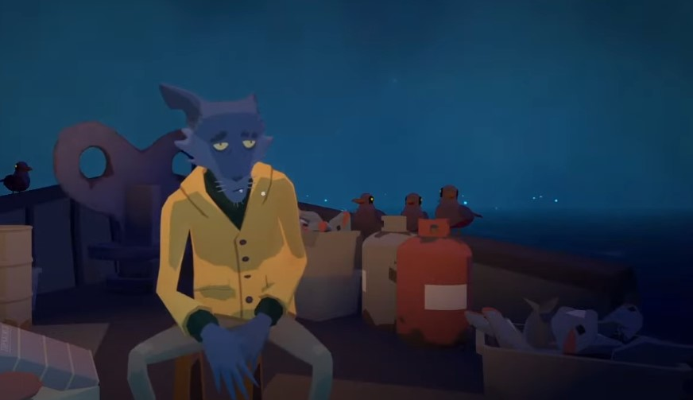
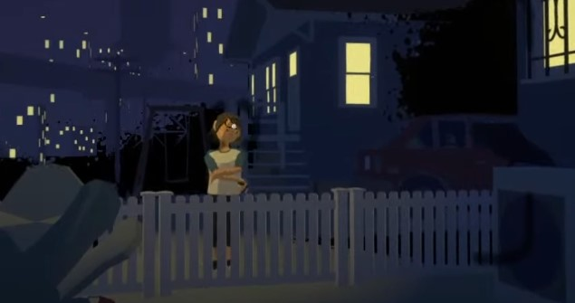
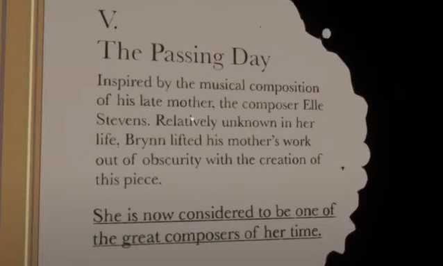
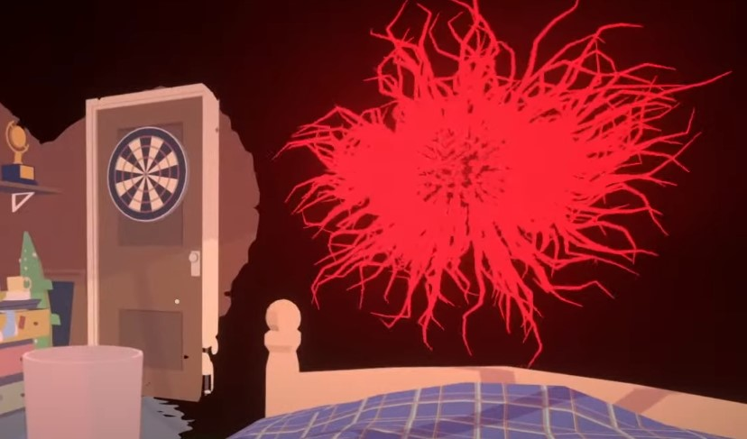

Before Your Eyes is a beautiful and incredibly emotional indie game. The story is based heavily off of your decisions, but this is how it went for me. You start out as "Ben" a recently passed sould on their way to the "Gatekeeeper", and you're being led into the aterlife by a wolf called "The Ferryman". You look at glimpses of your past life, but whenever you blink time moves forward.
You discover that you were a gifted piano player as a child, taking after your mother. She was an incredibly talented composer who had to become an accountant to help support her family. Your mother pushed you very hard to excell at piano so that you could get into a prestigious music school. However, the night before your big audtion you decide to sneak out so that you can see your first love, "Chloe".
You're very tired the next morning, and you fail your audition. Your mother is very upset, and you can tell that she is living bicariously through you in a way. She never achieved her dreams of musical stardom, but she believed that her son Ben would be able to make piano his career. However, Ben gets diagnosed with some form of fatal disease. He was forced to isolte himself in his room, but during this time he rediscovered his passion for art. This became his true purpose for life, and Ben becomes world-renowned for his abstract art. However, as his illness worsens he focused on what would evntually become his ultimate masterpiece; An abstract painting of his recently passed mother who always pushed him to succeed, titled "The Passing Day".
After the painting goes on display, Ben is reuinted with Chloe. He expresses his feelings for her, however, he also hides the severeness of the illness that is slowly killing him. The illness is represented by a glowing red orb, and it is eventually what causes the death of Ben. The game ends as you see The Gatekeeper let Ben into what we can only asssume is Heaven.
There is a very unique art style in this game. It screams indie, but in a good way. Most of the assets are low-poly, and there is an inky outline around your vision. Obviously a huge part of the game its webcam integretion, but honestly I had some techincal glitches with the software registering my blinks. The game accidentaly skipped several parts of the story by mistaking my blinks. Besides that though, there wasn't really any glitches. Any objects that you interact with are purely novelty. For example, you can practice the piano by blinking on the keys. However, this doesn't really effect anything in the game.The game isn't really challenging at all, but that's totally fine. Most decisions are morals-based, and some effect NPC dialouge and story. For example, you can choose to pursue the possible love intrest with Chloe. The purpose of this game is definitely to show off its beautiful story. In my entire life, only 3 games have made me ugly cry. This game, however, is the only one to do it in under an hour. The story is incredibly touching, and I believe the blinking aspect a metaphor for that no matter how hard you try, you won't be able to stay in one moment forever. Life is temporary and always moving, and you should pursue what makes you happy.